Getting a helper at home with HomeGenny
A step-by-step guide to the HomeGenny app: ask for a cook or caretaker, choose the right person, see their day, and pay the monthly bill.
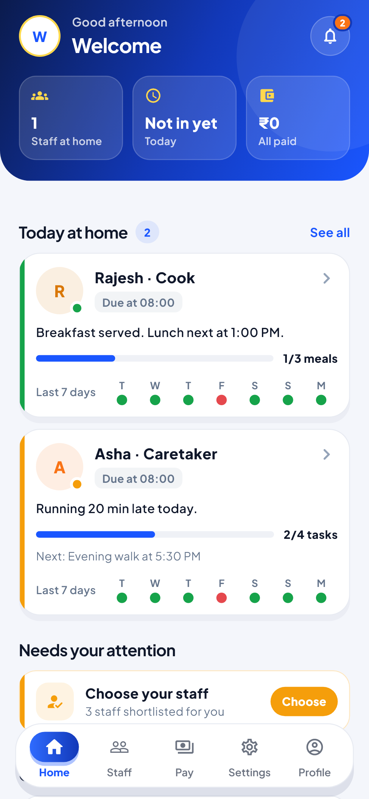
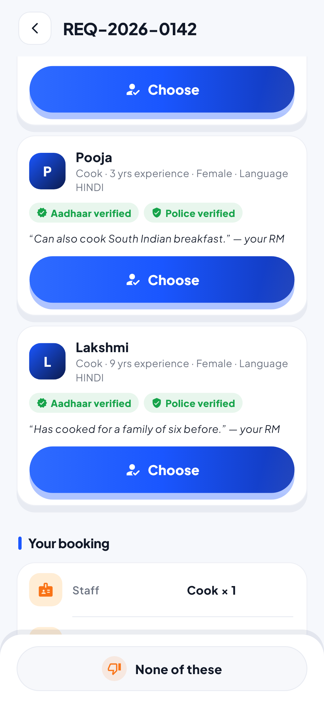
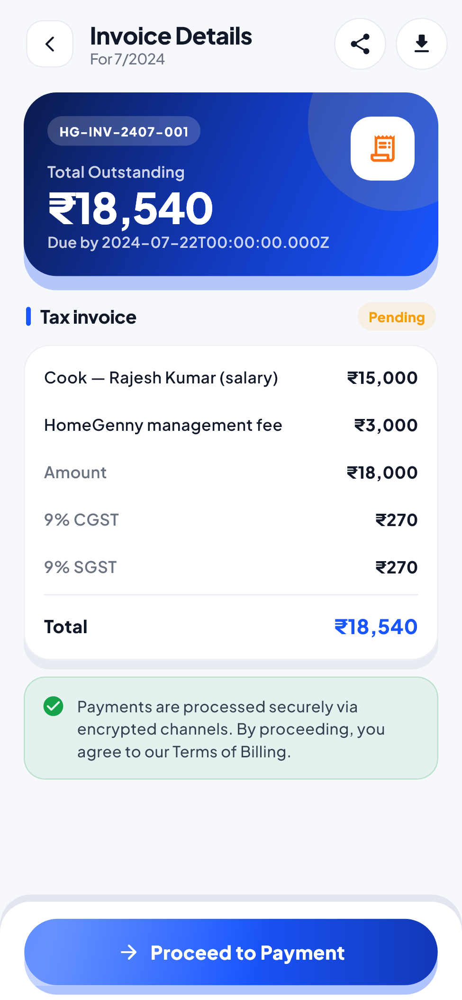
How HomeGenny works
HomeGenny finds you trusted, long-term help at home: cooks, caretakers for elderly family members, and trained nurses. Every helper is checked (Aadhaar, police check, medical) and trained before they come to you.
You also get your own Relationship Manager (RM). Your RM is a HomeGenny person who looks after your home: they find helpers for you, set up the trial, solve problems and send your monthly bill. You never have to deal with the helper alone.
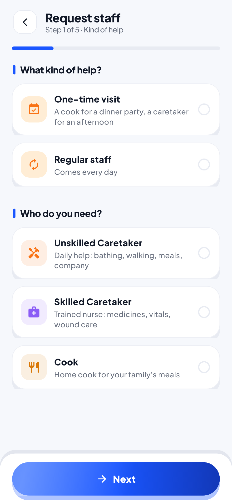
1. AskTell us what help you need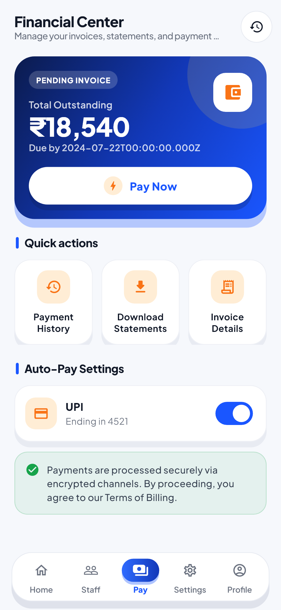
4. PayOne simple bill every month| In this guide | Page topic |
|---|---|
| Part 1 | Log in or create your account |
| Part 2 | Ask for a helper |
| Part 3 | Choose your helper |
| Part 4 | Your helper's day: attendance, meals and care |
| Part 5 | Your monthly bill |
| Part 6 | If something is wrong |
| Part 7 | Alerts, language and your profile |
| End | Common questions |
1Log in or create your account
You only need your mobile number. There is no password: the app sends you a 6-digit code each time.
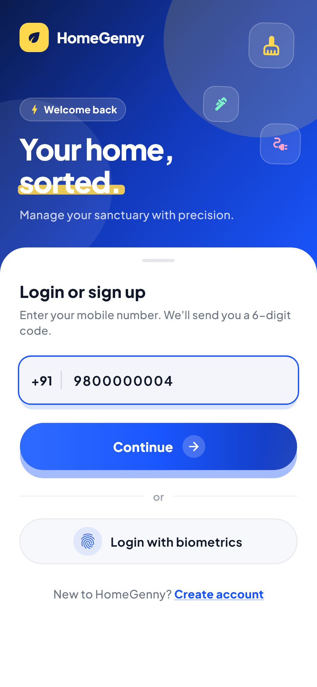
1Enter your mobile number
- What you see
- The Login or sign up screen.
- What to do
- Type your 10-digit mobile number and tap Continue.
- What happens next
- We send a 6-digit code to your phone by SMS.
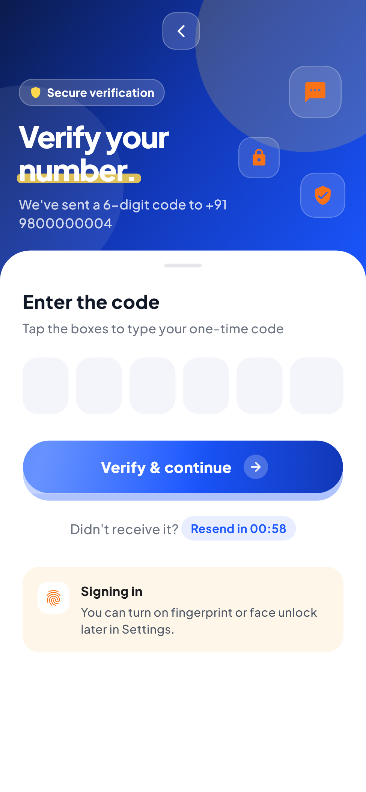
2Type the code
- What you see
- Verify your number and six empty boxes.
- What to do
- Tap the boxes and type the code from the SMS. The app checks it as soon as you type the last digit. You can also tap Verify & continue.
- What happens next
- If you already have an account, your Home screen opens. If you are new, go to step 3.
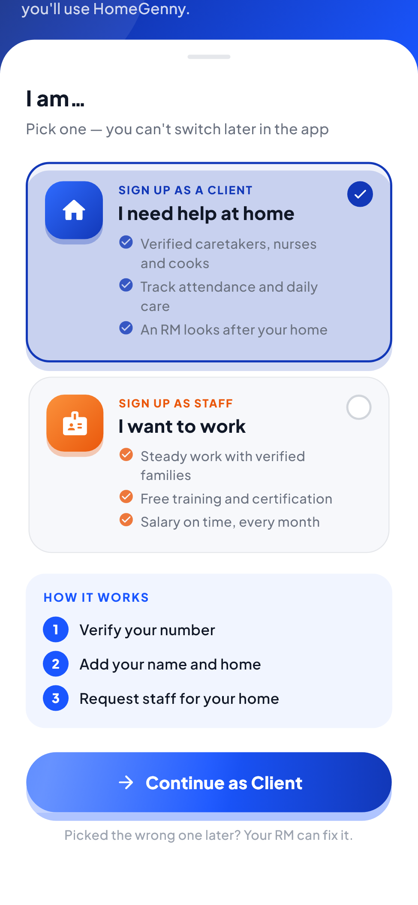
3New here? Choose "I need help at home"
- What you see
- Let's get you started with two choices.
- What to do
- Tap I need help at home, then Continue as Client. Then type the code again on the next screen.
- What happens next
- Your account is created. You can't change this choice in the app later, but your RM can fix it if you picked the wrong one.
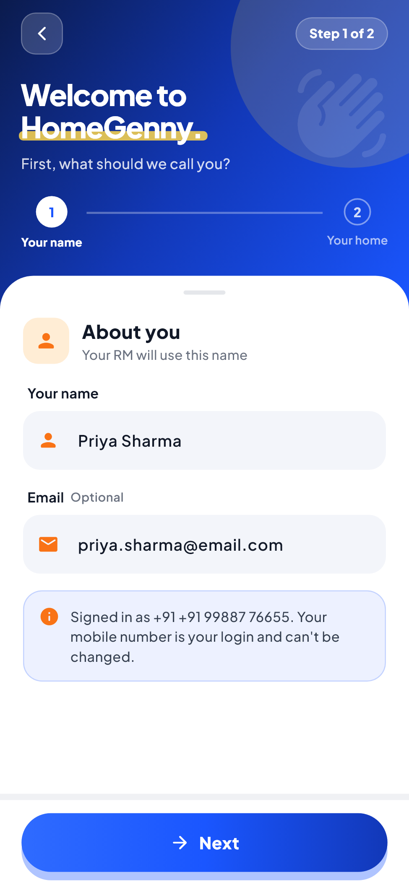
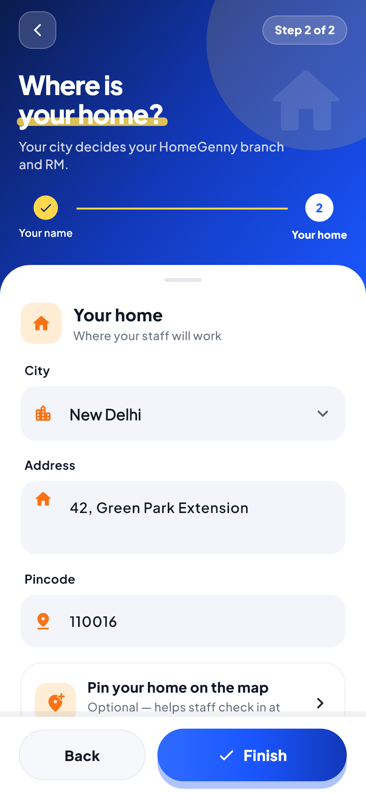
4Add your name and home
- What to do
- Type your name (email is optional) and tap Next. Then choose your city, type your address and pincode, and tap Finish.
- Why
- Your city decides which HomeGenny branch and RM look after you.
5Your Home screen
- What you see
-
- At the top: how many helpers are at home, whether they have arrived Today, and what you owe.
- Today at home: one card per helper with today's work.
- Needs your attention: things waiting for you, like choosing a helper.
- The bottom bar
- Home, Staff (your helpers), Pay (bills), Settings, Profile. The bell at the top right opens your alerts.
2Ask for a helper
Tell us what help you need in 5 short steps. It takes about two minutes.
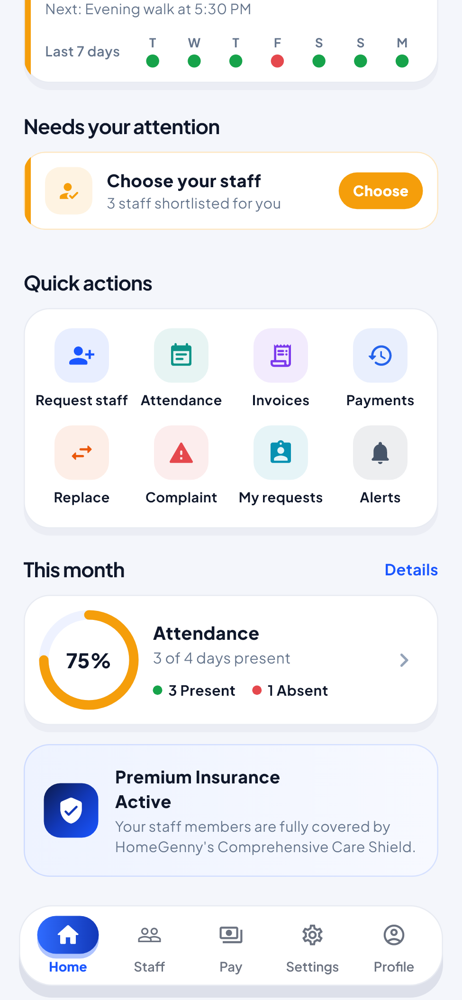
1Tap "Request staff"
- Where
- On Home, scroll down to Quick actions and tap Request staff.
- Tip
- The other quick actions are shortcuts used later in this guide: Attendance, Invoices, Payments, Replace, Complaint, My requests and Alerts.
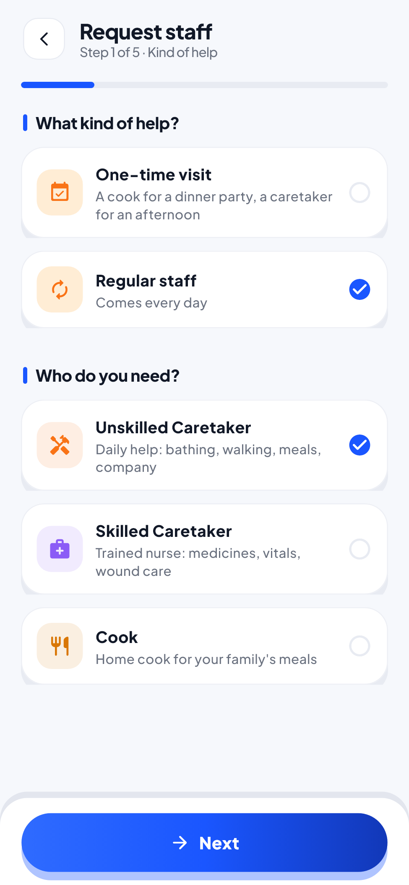
2Step 1 of 5: what kind of help?
- What to do
-
- Choose One-time visit (for example, a cook for a dinner party) or Regular staff (comes every day).
- Choose who you need: Unskilled Caretaker (bathing, walking, meals, company), Skilled Caretaker (a trained nurse for medicines, checks and wound care) or Cook.
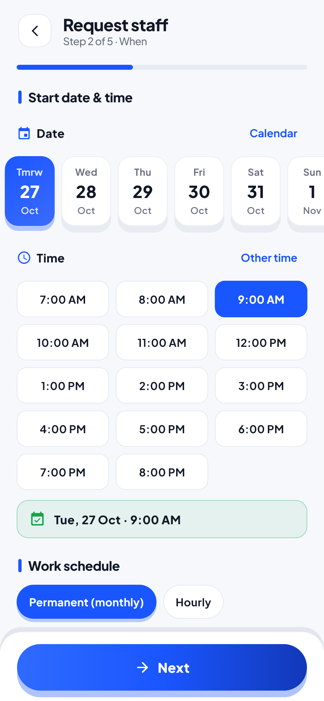
3Step 2 of 5: when?
- What to do
- Tap a start day (or Calendar for a later date) and a start time. For regular staff, also choose Permanent (monthly) or Hourly, how many hours a day, how many helpers, and if you prefer a woman or a man. Tap Next.
- Good to know
- The green line shows the day and time you picked, for example "Tue, 27 Oct · 9:00 AM".
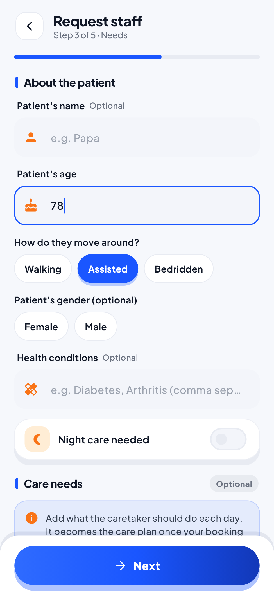
4Step 3 of 5: your needs
- For a caretaker
- Type the patient's age and choose how they move around: Walking, Assisted or Bedridden. You can also add health conditions, daily activities and food notes.
- For a cook
- Choose the diet (veg, egg, non-veg, Jain, vegan), how many people to cook for and which meals. You can set a weekly menu now or later.
- Then
- Tap Next.
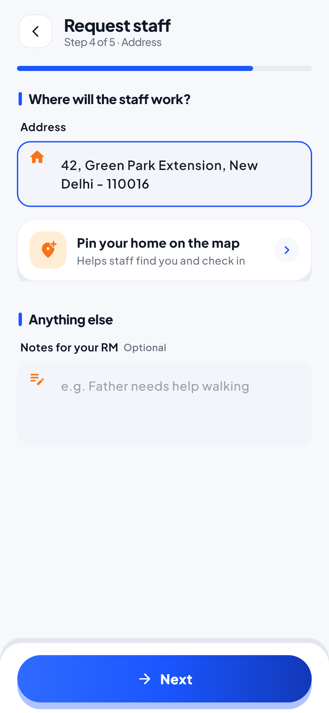
5Step 4 of 5: address
- What to do
- Type the full address where the helper will work. Tap Pin your home on the map so the helper can find you and the app can tell when they arrive. Add a note for your RM if you like, then tap Next.
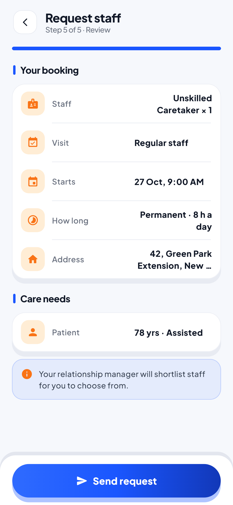
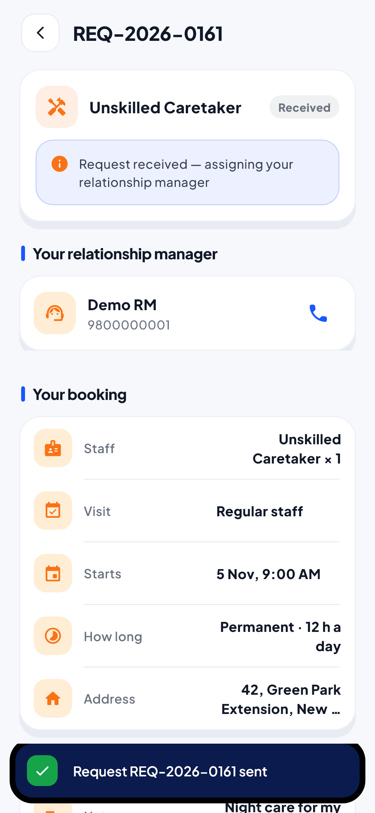
6Step 5 of 5: check and send
- What to do
- Read the summary. To change something, tap the back arrow at the top. When it looks right, tap Send request.
- What happens next
- You see "Request … sent" and your request page. It says Received while we assign your RM, and your RM's name and phone number appear on it.
3Choose your helper
Your RM looks at checked and trained helpers near you and suggests the best ones. You make the final choice.
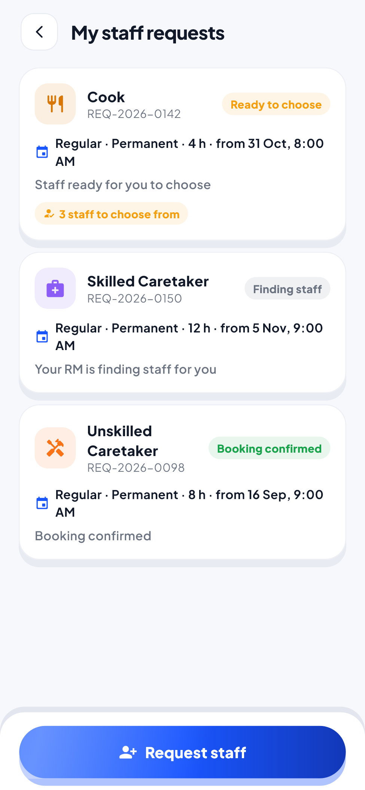
1Follow your requests
- Where
- Home → My requests.
- What the labels mean
-
Label Meaning Received We got your request and are assigning your RM. Finding staff Your RM is looking for helpers. Ready to choose Helpers are waiting for your choice. Act now! You chose Your RM is setting up the trial. Booking confirmed Your helper's trial is booked. Cancelled The request was cancelled.
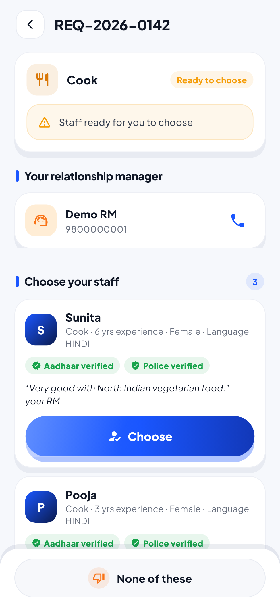
2Look at the suggested helpers
- How you know
- On Home you see Choose your staff under Needs your attention. Tap Choose there, or open the request from My requests.
- What you see
- Each helper's first name, years of experience, language, Aadhaar verified and Police verified badges, and a short note from your RM.
- Your privacy and theirs
- Phone numbers and full addresses are not shown. Your RM arranges everything.
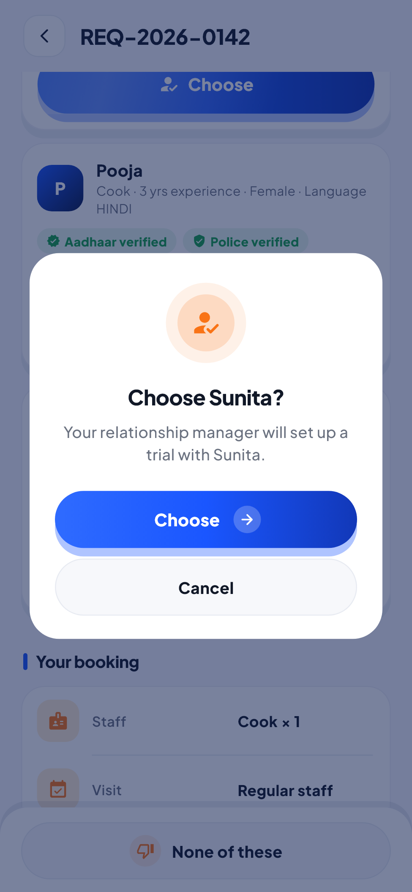
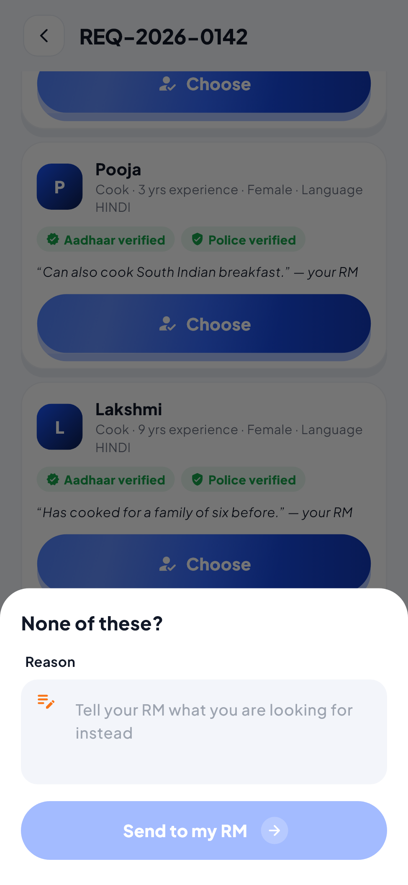
3Choose one, or ask for others
- To choose
- Tap Choose under the helper you like, then Choose again to confirm.
- Not happy with anyone?
- Tap None of these at the bottom, tell your RM what you are looking for, and tap Send to my RM. Your RM will suggest other helpers.
- What happens next
- Your RM sets up a trial (usually about a week). After the trial, your RM confirms the helper's salary and the helper starts regular work.
4Your helper's day
Once your helper starts, the app shows you their day: when they arrived, what they did, and what they cooked.
1Today at home
- What you see
- One card per helper:
- a coloured dot (green all fine, orange needs a look, for example running late);
- a one-line update, for example "Breakfast served. Lunch next at 1:00 PM.";
- progress for today (1/3 meals or 2/4 tasks);
- the Last 7 days: green = came, red = absent.
- What to tap
- The helper's name opens their profile. The meals or tasks line opens today's details.
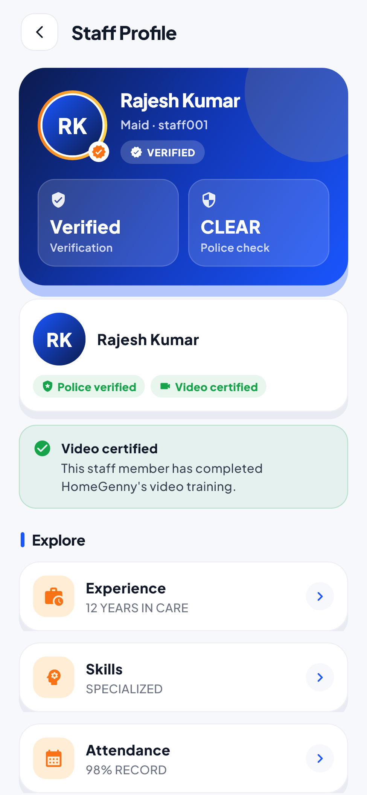
2Your helper's profile
- What you see
- Their checks (Verified, police check CLEAR, Video certified), then Experience, Skills, Attendance and Performance. Under Need a change? you can ask for a replacement.
- Also from
- The Staff tab at the bottom.
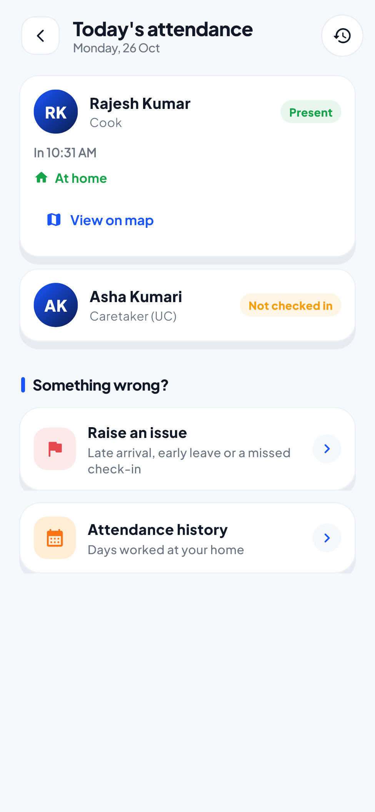
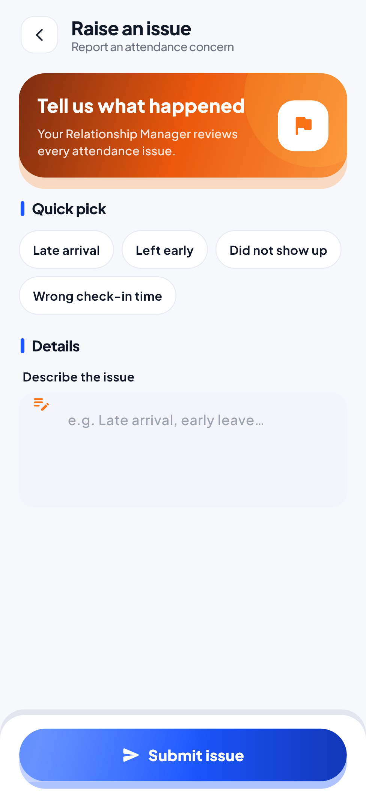
3Did they come today?
- Where
- Tap the Today box at the top of Home.
- What you see
- Each helper's status (Present or Not checked in), the time they arrived, and At home when their phone shows they are at your address. Tap View on map to see where they are while on duty.
- Something wrong?
- Tap Raise an issue, pick Late arrival, Left early, Did not show up or Wrong check-in time, add a few words and tap Submit Issue. Your RM reviews every issue.
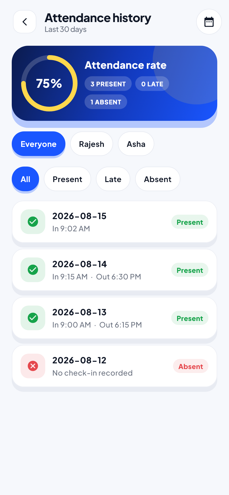
4Attendance history
- Where
- Home → Attendance (quick action).
- What you see
- The attendance rate for the last 30 days and every day's check-in and check-out. Use the buttons to see one helper only, or only late or absent days.
If you have a cook
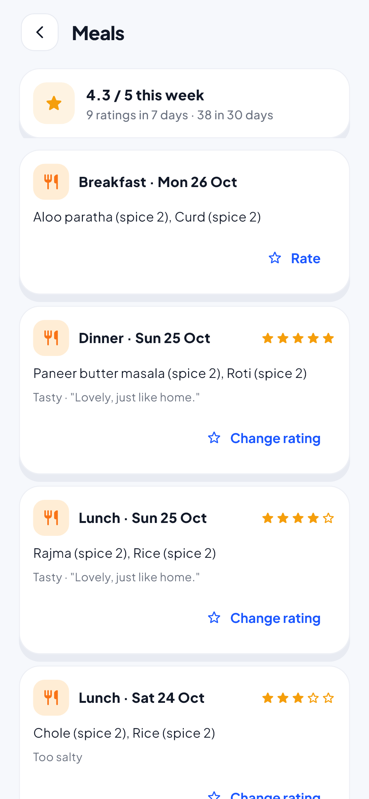
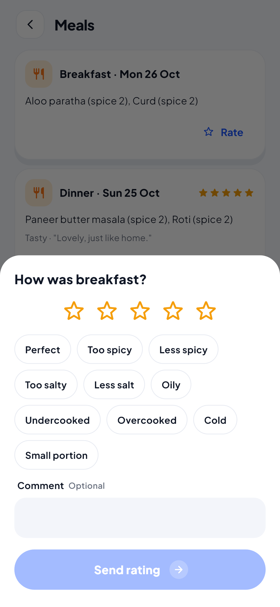
5See and rate the meals
- Where
- Tap the meals line on your cook's card on Home.
- What to do
- Tap Rate under a meal, choose 1 to 5 stars, tap any words that fit (for example Too salty or Perfect) and tap Send rating.
- Why it helps
- Your cook sees your ratings. If the same comment comes up again and again, the app suggests a change to your food profile.
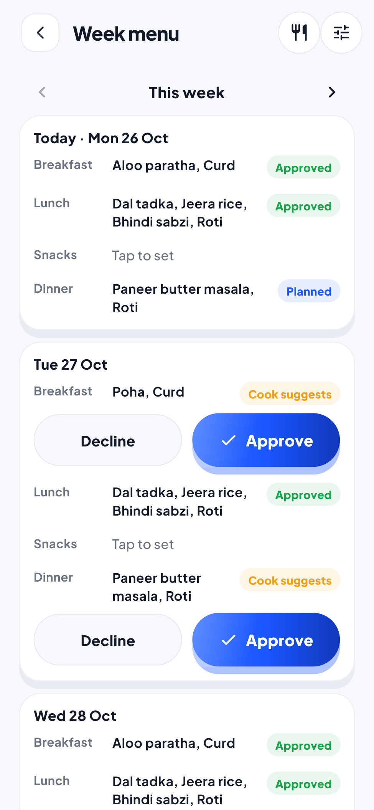
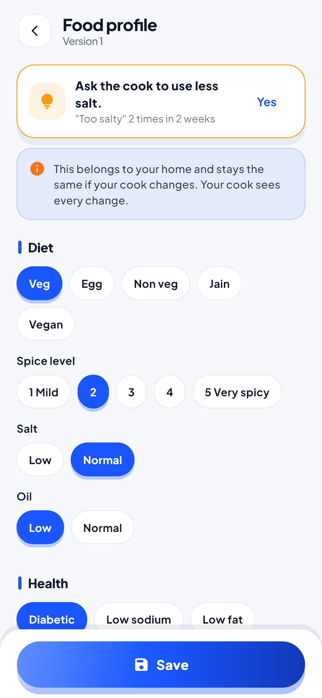
6Plan the week's menu and your food profile
- Week menu
- Shows each day's breakfast, lunch, snacks and dinner. When your cook suggests a dish it says Cook suggests: tap Approve or Decline. Tap Tap to set to choose a meal yourself.
- Food profile
- Your home's diet, spice level, salt and oil, health needs (for example Diabetic), cuisines and dislikes. Tap Save. It stays with your home even if your cook changes.
If you have a caretaker
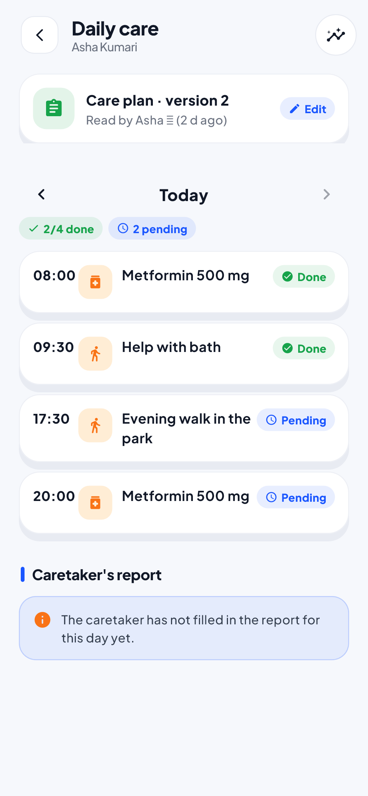
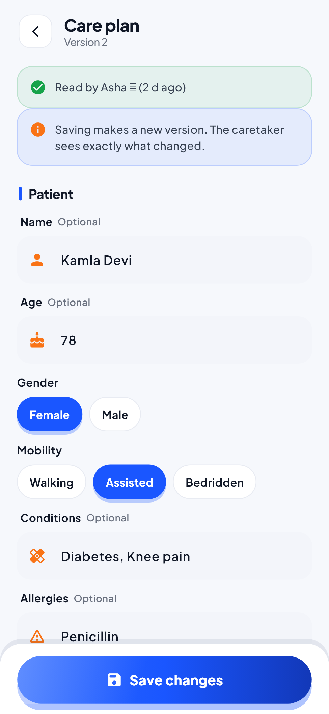
7Daily care and the care plan
- Daily care
- Tap the tasks line on your caretaker's card. You see today's list (medicines, bath, walk…) with Done or Pending, and the caretaker's daily report.
- Care plan
- The patient's details, medicines, activities, and dos and don'ts. Tap Edit, make changes and tap Save changes. Each save makes a new version, and the caretaker sees exactly what changed. "Read by …" shows they have read it.
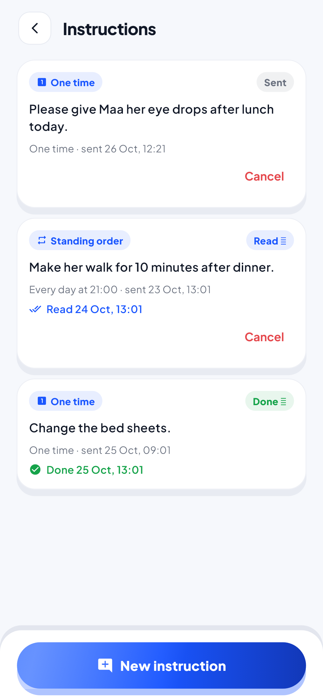
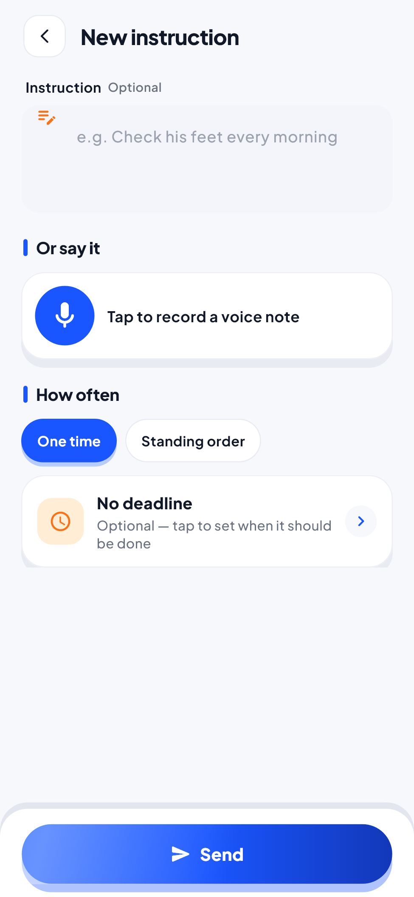
8Give an instruction
- What to do
- Open Instructions and tap New instruction. Type it, or tap Tap to record a voice note and speak. Choose One time or Standing order (every day), then tap Send.
- What happens next
- Your helper gets it right away. You see Read when they have seen it and Done when it's finished. You can Cancel an instruction that is no longer needed.
5Your monthly bill
You get one bill a month. It covers your helper's salary, HomeGenny's management fee with GST, and the employer's share of ESIC/PF.
1See what you owe
- Where
- The Pay tab at the bottom.
- What you see
- The amount outstanding and its due date. Tap Pay Now or Invoice Details to see each line: salary, management fee, GST and the total.
- Keep a copy
- On the invoice, tap the download or share buttons at the top right.
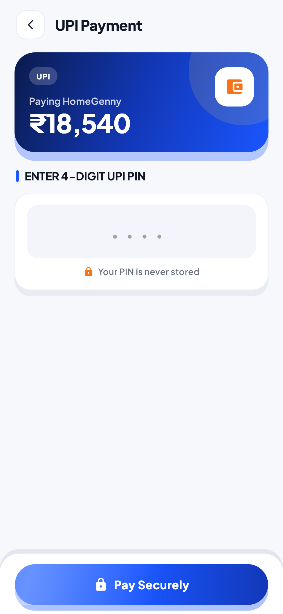
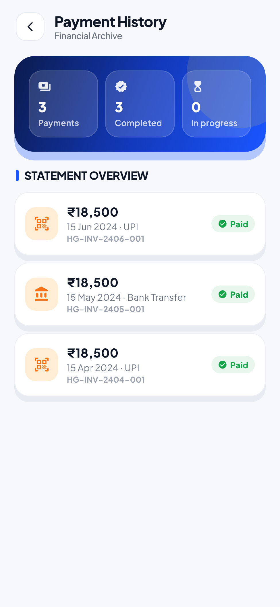
2Pay and see past payments
- To pay
- On the invoice, tap Proceed to Payment, enter your UPI PIN and tap Pay Securely.
- Past payments
- Pay tab → Payment History lists every payment with its date, method and invoice number.
6If something is wrong
Every complaint and replacement request goes straight to your RM.
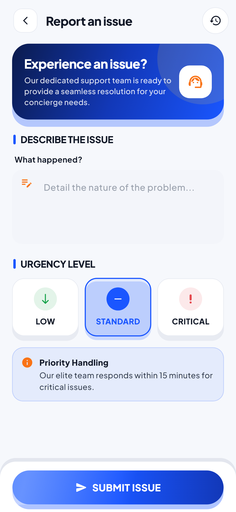
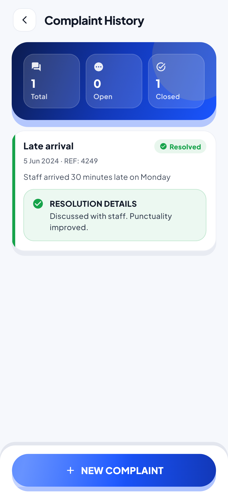
1Make a complaint
- Where
- Home → Complaint.
- What to do
- Write what happened, choose how urgent it is (Low, Standard or Critical) and tap Submit issue.
- Follow it
- Complaint History shows each complaint as Open or Resolved, with what your RM did about it.
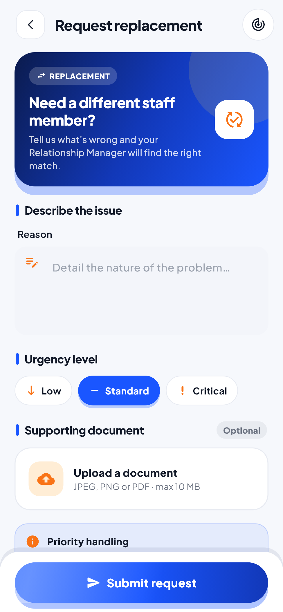
2Ask for a different helper
- Where
- Home → Replace, or Replacement on your helper's profile.
- What to do
- Say what's wrong, choose the urgency, add a photo or document if you have one, and tap Submit request.
- What happens next
- Your RM finds the right match and suggests new helpers, just like in Part 3.
7Alerts, language and your profile
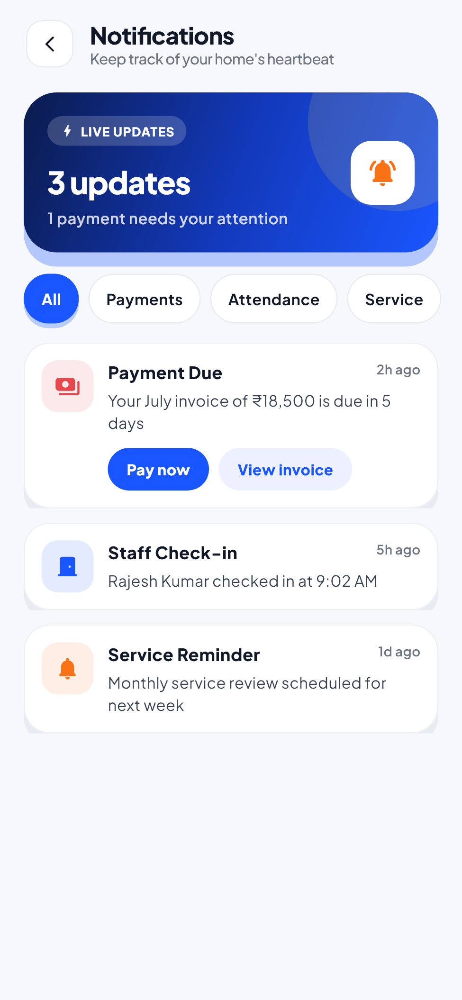
NotificationsTap the bell on Home. Filter by Payments, Attendance or Service.
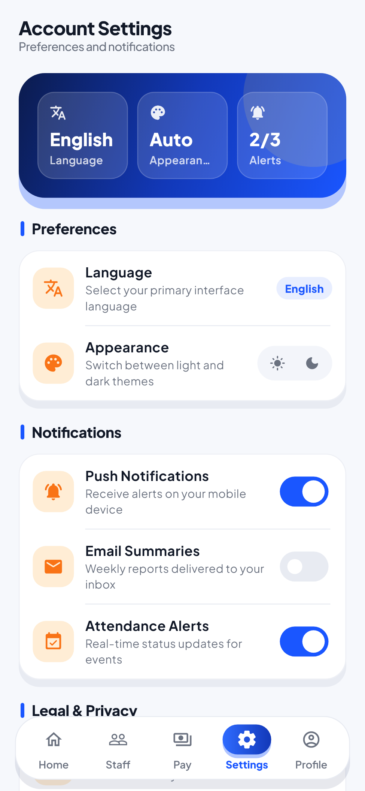
SettingsChange the Language to Hindi (हिन्दी), switch light or dark look, and choose which alerts you get.
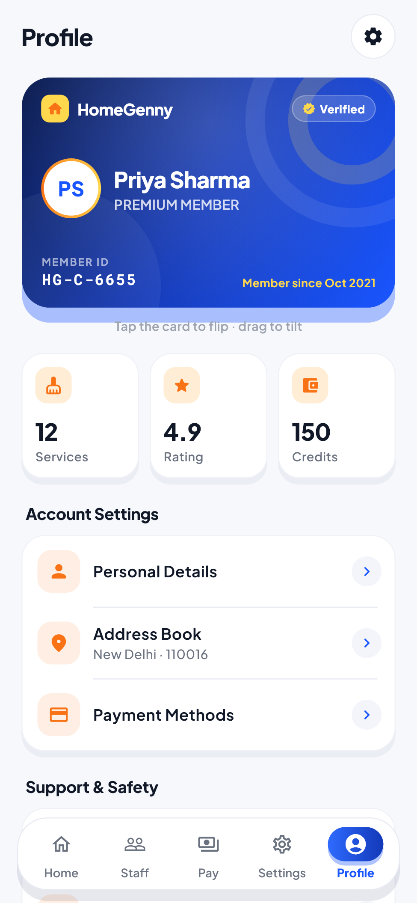
ProfileYour personal details, address and payment methods.
Common questions
- Do I need a password?
- No. You log in with your mobile number and a code sent by SMS. You can also turn on fingerprint or face unlock in Settings.
- Can I talk to my helper's phone number directly?
- Everything goes through your Relationship Manager, so there is always someone responsible. Use instructions in the app for daily tasks, and call your RM for anything else. Their number is on every request page.
- How long is the trial?
- Your RM tells you when they set it up. It is usually about a week. After the trial, your RM confirms the helper and their salary.
- What is in my bill?
- Your helper's salary, HomeGenny's management fee with GST, and the employer's share of ESIC/PF. Hourly helpers are billed by the hour.
- The app says "Session expired" or "No internet".
- "Session expired" means you need to log in again with your number and a new code. "No internet" means your phone is offline: check Wi-Fi or mobile data and try again.
- The app asks me to update.
- Tap the button to open the app store and install the new version. Older versions stop working when a required update is out.
- Who do I call for help?
- Your Relationship Manager. Their name and phone number are on your request pages.